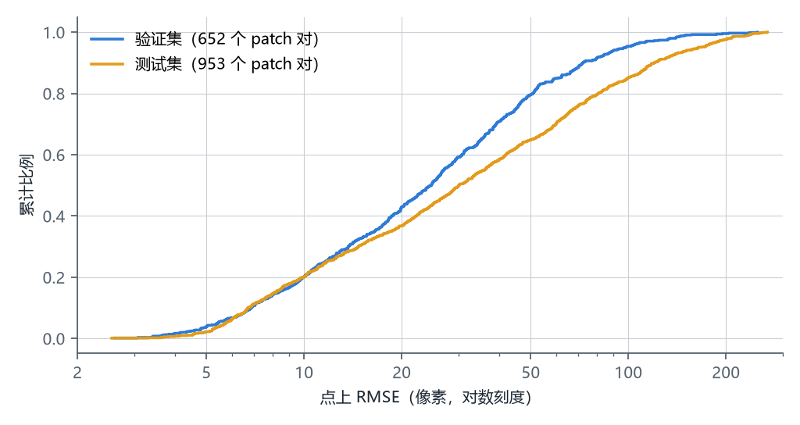
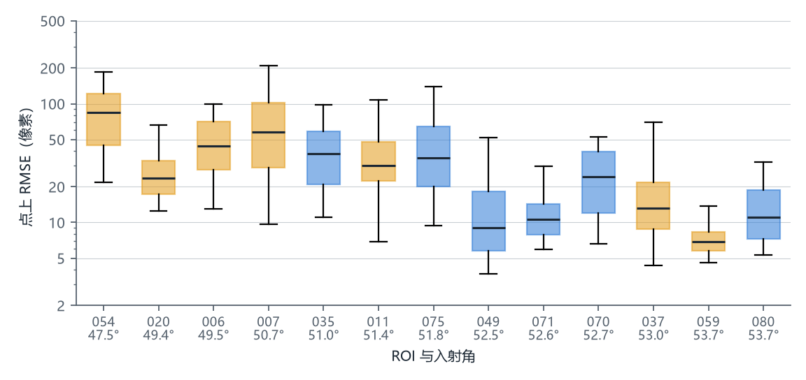
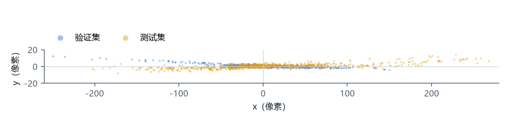

样本难度
不同的 patch 对，配准的难度不一样。最直接的因素是两张图原本错开了多远：把光学 patch 和 SAR patch 叠在一起，同一个撞击坑在两张图上可能只差几个像素，也可能差上百个像素。我们用这个错开的距离来近似衡量样本难度，称为点上 RMSE：数越大，两张图错开得越多，配准越难。
点上 RMSE 由评测真值点算出。只有验证集、测试集有评测真值点，训练集没有这个值。
定义
一对评测真值点，光学坐标为 p，SAR 坐标为 q，两者都是 patch 内的像素坐标，x 向右、y 向下。两者之差
d = q − p = g(p) + e
- g(p)：该位置上光学与 SAR 之间真实存在的错位；
- e：标注误差。
一个 patch 对上有 N 对点，点上 RMSE 是 N 个 d 的长度的均方根：
单位为像素，1 像素为 7.5 m。两张图在这些点上完全对齐时，点上 RMSE 为 0。
计算
例子
测试集 ROI_020 的 patch 39 上有 9 对点。把光学 patch 上的点和 SAR patch 上的同名点画进同一个坐标，每对点连一个箭头。9 个箭头都接近水平，长短、方向各不相同，最长 52.7 像素。9 个长度的均方根是 30.0 像素。
原理 医学图像配准把配准后同一标记点在两幅图上的距离称为目标配准误差（target registration error，TRE），把配准前的称为初始 TRE，并用它描述一个病例有多难配。点上 RMSE 是一个 patch 对上各点初始 TRE 的均方根。它只在评测真值点上取值，不拟合任何变换。
计算 对每个 patch 对：
- 读入评测真值点文件，每行依次为光学 x、光学 y、SAR x、SAR y；文件里的 y 取负存储，读入后取反。
- 逐点求 d = q − p。
- 取 ‖d‖² 的平均，再开方。
def point_rmse(path):
a = np.loadtxt(path, ndmin=2)
d = np.column_stack([a[:, 2] - a[:, 0], -(a[:, 3] - a[:, 1])])
return np.sqrt((d**2).sum(axis=1).mean())
完整脚本：research/sample-difficulty/difficulty.py
出处
- Castillo R. et al. A framework for evaluation of deformable image registration spatial accuracy using large landmark point sets. Physics in Medicine and Biology, 54(7), 2009. doi:10.1088/0031-9155/54/7/001
- Borovec J. et al. ANHIR: Automatic Non-Rigid Histological Image Registration Challenge. IEEE Transactions on Medical Imaging, 39(10):3042–3052, 2020. doi:10.1109/TMI.2020.2986331
结果
数据是验证集、测试集中有评测真值点的全部 1605 个 patch 对，共 13031 对点，每个 patch 对 7–11 对。

分布一半的 patch 对错开不到 27 像素，一成超过 104 像素。
各 ROI13 个 ROI 的中位数从 6.9 到 84.3 像素，入射角小的 ROI 偏大。
方向错位几乎全在 x 方向，y 分量的中位数只有 1.7 像素。 沿条带相邻 patch 对的值相近，难段与易段成段交替。
沿条带相邻 patch 对的值相近，难段与易段成段交替。
测量误差
本页的分位数、中位数都是这 1605 个 patch 对本身的统计量，不是从样本推断总体，所以不附置信区间。它们的不确定度只来自评测真值点的标注误差 e。
标注误差每个坐标轴约 1 像素。按这个大小给每对点加上随机误差，重算点上 RMSE，重复 200 次：
| 量 | 结果 |
|---|---|
| 单个 patch 对的点上 RMSE 的标准差 | 0.33–0.37 像素（1605 个 patch 对的 10–90 分位），最大 0.41 |
| 单个 patch 对的点上 RMSE 的偏高 | 不超过 0.14 像素（90 分位） |
| 1605 个值的中位数 | 27.0–27.3 像素（200 次的 2.5–97.5 分位） |
点上 RMSE 在 10 像素以上时，标注误差带来的变化不超过 4%。低于 5 像素的有 46 个 patch 对，它们的值有相当一部分来自标注误差。